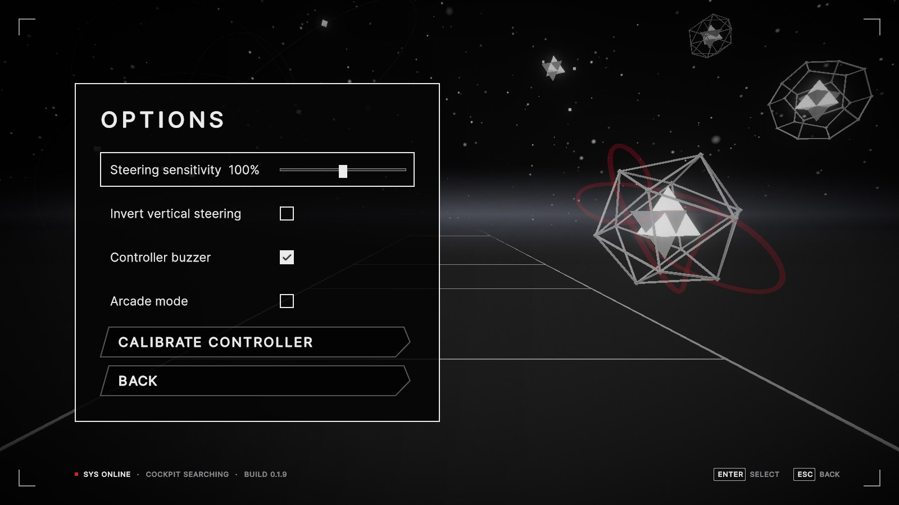
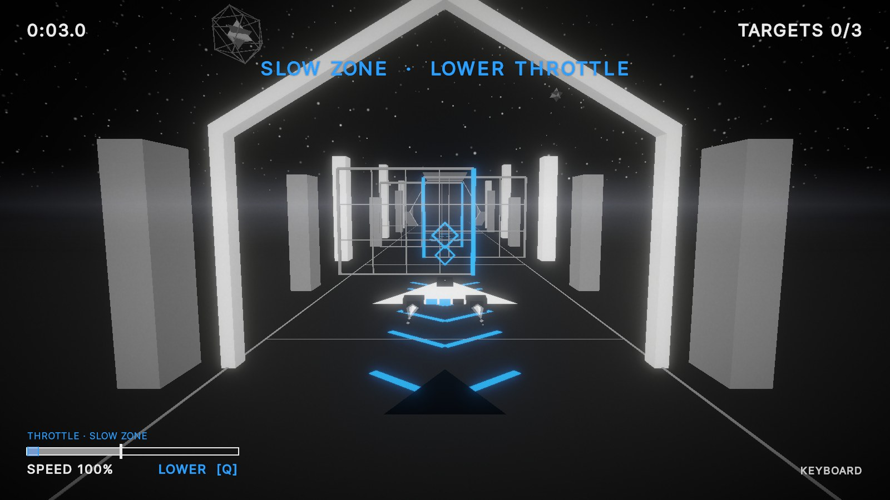
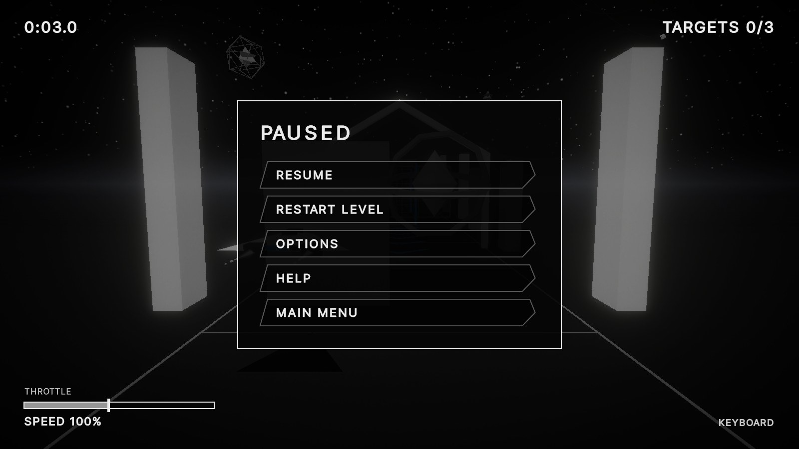
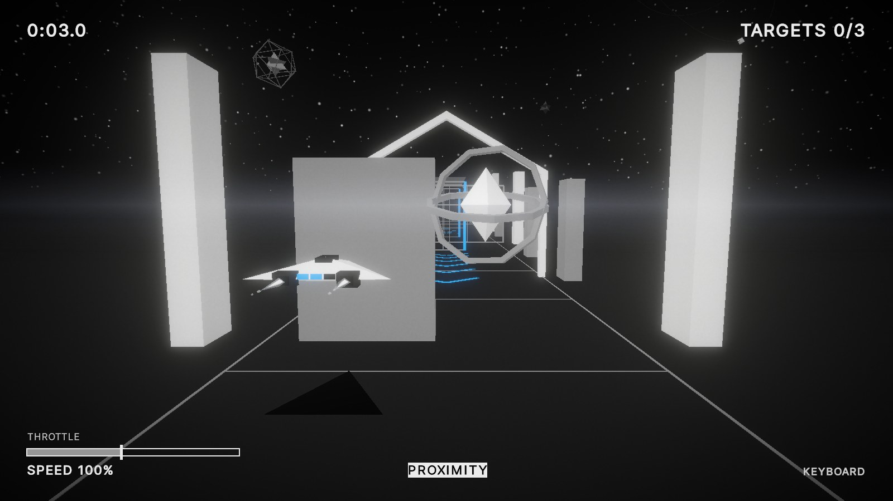

How the interface works, as of build 0.1.9
Axiom is a black-and-white geometric flight shooter, played on a keyboard or a homemade Arduino cockpit. This is a quick tour of its UI: what's on screen, how a frame gets built, and how the game talks back. It's an early prototype, so think of every screenshot here as a snapshot.

Four kinds of UI
A handy way to sort game UI is by two questions: is it part of the game's world, and is it drawn in 3D space? That gives four kinds. Pick one to see where it lives in a frame from the first level, just as the ship takes a hit.
- Shield segmentsThree blue cells on the ship's tail. Take a hit, lose a cell.
- Engine exhaustThe jets stretch with the throttle you ask for, before the ship has actually sped up.
- Aim reticlesTwo diamonds at 10 m and 25 m. Line them up on a target and fire.
- Floor chevronsBlue chevrons lead you into slow and fast sections.
- Run timeTicks up from the start line; par time shows on the results.
- TargetsHow many of the course's targets you've broken.
- Zone bannerSays what the section wants. Here: slow down.
- Throttle gaugeSpeed bar with the recommended band and a hint, including the key to press.
- Input badgeKeyboard or controller, and a warning if the throttle sensor drops out.
- Damage pulseAngular red edges flash for half a second on a hit. Shape and timing carry the warning, not just the colour.
Red is kept for damage and problems, blue for guidance. Nothing important relies on colour alone. (The four categories come from Fagerholt and Lorentzon's Beyond the HUD, 2009.)
Screen flow
Two scenes and a handful of panels. The game can pause itself too: losing window focus or unplugging the controller mid-run drops you into the pause menu.
flowchart LR menu([Main menu]) -- Play --> fly([In flight]) -- "end of course
or shield gone" --> res[Results] menu --> opts[Options] --> cal[Calibrate
controller] menu --> help[Help] fly -- "Esc or MENU
focus lost, unplugged" --> pause[Paused] pause -. Resume .-> fly res -. "Next / Retry" .-> fly pause -. "Main menu" .-> menu res -. "Main menu" .-> menu classDef key stroke:#d61f29,stroke-width:2px class fly key



Options and Help open from both the main menu and the pause menu. Menus are UI Toolkit (UXML and USS) and work with mouse, keyboard or the cockpit. The slanted buttons are drawn in code and lean at the same angle as the title.
Building a frame
Step through the main menu one layer at a time, from bare geometry to the finished screen.
- GeometryFlat-shaded meshes and nothing else. A hard horizon against pure black.
- HazeFog and sky share one dark colour, so distance softens things instead of erasing them, and the floor melts into the sky.
- AtmosphereA glowing horizon band, stars and slowly drifting dust, all generated when the scene loads.
- GradeNeutral tonemapping with a small lift in exposure and contrast.
- BloomWhite geometry starts to glow, so the shapes read as lit rather than painted.
- Vignette and grainPulls the eye inward and takes the clean digital edge off.
- InterfaceUI Toolkit on top: the 3D title (rendered to a texture), buttons, a dark scrim behind them, corner brackets and a live status line. It draws after all the post-processing, so text stays crisp.
Arcade mode
An Options toggle that turns the screen into an old vector monitor: phosphor glow, scanlines and curvature, red-only colour fringing, flicker, static and a slow rolling band. Look at the level: the HUD stays sharp, because the UI is drawn after every screen effect.
The signal glitch

Leave the menu alone and every 8 to 12 seconds a short signal glitch rolls through. It's a hand-made 18-frame timeline played at 25 fps (0.72 s), and it waits until you've stopped touching anything, so it never gets in the way of picking an option.
Feedback on every channel
Every important event is reported in more than one way, so a muted buzzer, keyboard play or a missed colour never hides it. The cockpit adds channels a keyboard player doesn't get, but never ones they need.
| Event | Screen | World | Buzzer | Cockpit LCD | Lights and rumble |
|---|---|---|---|---|---|
| Shield hit | Red edge pulse | Ship blinks, a tail cell goes dark | Short tone, long and low on the last one | SHIELD HIT 2/3 | Shield light out, rumble jolt |
| Throttle zone | Banner, gauge band, RAISE / LOWER hint | Blue floor chevrons | High tone for fast, low for slow | Band on the speed bar, arrows | SLOW / FAST light, range on the throttle lights |
| Collision ahead | PROXIMITY label pulses | Parking-sensor beeps, then a solid tone | ! PROXIMITY ! | PROX light blinks with the beeps | |
| Engine demand | Speed readout | Exhaust jets stretch | Speed bar and percentage | Rumble grows with speed, lever light | |
| Sensor or link lost | Warning badge, or a pause with a notice | Warning tone | HOLDING CRUISE, RECONNECTED | LINK light |

The cockpit is UI too
The homemade controller has its own outputs: a 16×2 LCD, a string of lights, an EMP lamp, a buzzer and rumble. Every part works on the bench, held together with tape for now while the enclosure gets built.
- Stick and FIRESteer, hold FIRE to shoot. The twist axis is wired; its job is still undecided.
- Throttle leverMeasured by an ultrasonic sensor. Push forward to go faster; cruise sits in the middle.
- LCDA second instrument panel: speed, shield, targets and time, swapping in guidance and warnings.
- MENUPause in flight, back in menus.
- BuzzerTones for hits, zones, proximity and a lost sensor. Can be muted in Options.
- Throttle lightsA dot at the lever, with the recommended range lit inside a zone.
- Shield lightsOne per shield segment.
- Warning lightsLINK, SLOW, FAST, PROX and EMP, each behind a printed label.
- Master armFlip-cover switch: arm it to launch, flip to safe to pause.
- EMP domeA once-per-run blast. Its lamp stays lit until you use it.
- RumbleEngine rumble that grows with speed, plus a jolt on hits.
The LCD complements the HUD rather than copying it. The top row is always speed; the bottom row shows shield, targets and time until something matters more (a zone, a hit, a warning). Pause mirrors the selected menu item, and the results page through your stats.
Shown here as an approximation; the real display uses a few custom characters for shields and targets.
Then and now
Where the look started, and where it is today.
- Flat titleThe first menu: a text title and plain scene, no post-processing.
- 3D titleAn extruded, chamfered title built in Blender, leaned to match the buttons.
- Full lookHaze, atmosphere, grade, interface details and the idle glitch.
The level picked up the menu's grade and atmosphere, the floor now runs into the haze, and a few distant constructs keep the two scenes feeling like one world.